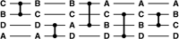
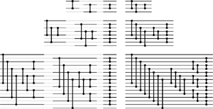
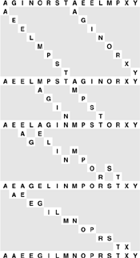
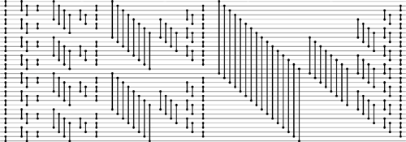
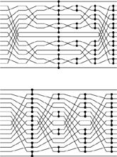
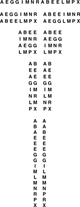
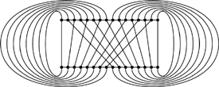
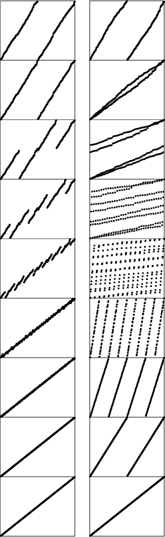

C++ Programming Robert Sedgewick - Princeton University Addison Wesley Professional Algorithms in C++, Parts 1–4: Fundamentals, Data Structure, Sorting, Searching, Third Edition C++ Programming Robert Sedgewick - Princeton University Addison Wesley Professional Algorithms in C++, Parts 1–4: Fundamentals, Data Structure, Sorting, Searching, Third Edition
11.2. Sorting Networks
The simplest model for studying nonadaptive sorting algorithms is an abstract machine that can access the data only through compare–exchange operations. Such a machine is called a sorting network. A sorting network comprises atomic compare–exchange modules, or comparators, which are wired together so as to implement the capability to perform fully general sorting.
Figure 11.4 shows a simple sorting network for four keys. Customarily, we draw a sorting network for N items as a sequence of N horizontal lines, with comparators connecting pairs of lines. We imagine that the keys to be sorted pass from right to left through the network, with a pair of numbers exchanged if necessary to put the smaller on top whenever a comparator is encountered.
The keys move from left to right on the lines in the network. The comparators that they encounter exchange the keys if necessary to put the smaller one on the higher line. In this example, B and C are exchanged on the top two lines, then A and D are exchanged on the bottom two, then A and B, and so forth, leaving the keys in sorted order from top to bottom at the end. In this example, all the comparators do exchanges except the fourth one. This network sorts any permutation of four keys.

Many details must be worked out before an actual sorting machine based on this scheme could be built. For example, the method of encoding the inputs is left unspecified. One approach would be to think of each wire in Figure 11.4 as a group of lines, each holding 1 bit of data, so that all the bits of a key flow through a line simultaneously. Another approach would be to have the comparators read their inputs 1 bit at a time along a single line (most significant bit first). Also left unspecified is the timing: mechanisms must be included to ensure that no comparator performs its operation before its input is ready. Sorting networks are a good abstraction because they allow us to separate such implementation considerations from higher-level design considerations, such as minimizing the number of comparators. Moreover, as we shall see in Section 11.5, the sort network abstraction is useful for applications other than direct circuit realizations.
Another important application of sorting networks is as a model for parallel computation. If two comparators do not use the same input lines, we assume that they can operate at the same time. For example, the network in Figure 11.4 shows that four elements can be sorted in three parallel steps. The 0–1 comparator and the 2– 3 comparator can operate simultaneously in the first step, then the 0–2 comparator and the 1–3 comparator can operate simultaneously in the second step, and then the 2–3 comparator finishes the sort in the third step. Given any network, it is not difficult to classify the comparators into a sequence of parallel stages that consist of groups of comparators that can operate simultaneously (see Exercise 11.17). For efficient parallel computation, our challenge is to design networks with as few parallel stages as possible.
Program 11.2 corresponds directly to a merging network for each N, but it is also instructive for us to consider a direct bottom-up construction, which is illustrated in Figure 11.5. To construct a merging network of size N, we use two copies of the network of size N/2; one for the even-numbered lines and one for the odd-numbered lines. Because the two sets of comparators do not interfere, we can rearrange them to interleave the two networks. Then, at the end, we complete the network with comparators between lines 1 and 2, 3 and 4, and so forth. The odd–even interleaving replaces the perfect shuffle in Program 11.2. The proof that these networks merge properly is the same as that given for Properties 11.1 and 11.2, using the 0–1 principle. Figure 11.6 shows an example of the merge in operation.
These different representations of the networks for four (top), eight (center), and 16 (bottom) lines expose the network's basic recursive structure. On the left are direct representations of the construction of the networks of size N with two copies of the networks of size N/2 (one for the even-numbered lines and one for the odd-numbered lines), plus a stage of comparators between lines 1 and 2, 3 and 4, 5 and 6, and so forth. On the right are simpler networks that we derive from those on the left by grouping comparators of the same length; grouping is possible because we can move comparators on odd lines past those on even lines without interference.

When all the shuffling is removed, Batcher's merge for our example amounts to the 25 compare–exchange operations depicted here. They divide into four phases of independent compare–exchange operations at a fixed offset for each phase.

Program 11.3. Batcher's odd-even merge (nonrecursive version)|
This implementation of Batcher's odd–even merge (which assumes that the file size N is a power of 2) is compact but mysterious. We can understand how it accomplishes the merge by examining how it corresponds to the recursive version (see Program 11.2 and Figure 11.5). It accomplishes the merge in lg N passes consisting of uniform and independent compare–exchange instructions.
template <class Item>
void merge(Item a[], int l, int m, int r)
{ int N = r-l+1; // assuming N/2 is m-l+1
for (int k = N[/]2; k > 0; k /= 2)
for (int j = k % (N/2); j+k < N; j += k+k)
for (int i = 0; i < k; i++)
compexch(a[l+j+i], a[l+j+i+k]);
}
|
Program 11.3 is a bottom-up implementation of Batcher's merge, with no shuffling, that corresponds to the networks in Figure 11.5. This program is a compact and elegant in-place merging function that is perhaps best understood as just an alternate representation of the networks, although direct proofs that it accomplishes the merging task correctly are also interesting to contemplate. We shall examine one such proof at the end of this section.
Figure 11.7 shows Batcher's odd–even sorting network, built from the merging networks in Figure 11.5 using the standard recursive mergesort construction. The construction is doubly recursive: once for the merging networks and once for the sorting networks. Although they are not optimal—we shall discuss optimal networks shortly—these networks are efficient.
This sorting network for 32 lines contains two copies of the network for 16 lines, four copies of the network for eight lines, and so forth. Reading from right to left, we see the structure in a top-down manner: A sorting network for 32 lines consists of a 16-by-16 merging network following two copies of the sorting network for 16 lines (one for the top half and one for the bottom half). Each network for 16 lines consists of an 8-by-8 merging network following two copies of the sorting network for 8 lines, and so forth. Reading from left to right, we see the structure in a bottom-up manner: The first column of comparators creates sorted subfiles of size 2; then, we have 2-by-2 merging networks that create sorted subfiles of size 4; then, 4-by-4 merging networks that create sorted subfiles of size 8, and so forth.

Property 11.3. Batcher's odd–even sorting networks have about N(lg N)2/4 comparators and can run in (lgN)2/2 parallel steps|
The merging networks need about lgN parallel steps, and the sorting networks need 1 + 2 + . . . + lg N, or about (lg N)2/2 parallel steps. Comparator counting is left as an exercise (see Exercise 11.23).
|
Using the merge function in Program 11.3 within the standard recursive mergesort in Program 8.3 gives a compact in-place sorting method that is nonadaptive and uses O(N(lgN)2) compare–exchange operations. Alternatively, we can remove the recursion from the mergesort and implement a bottom-up version of the whole sort directly, as shown in Program 11.4. As was Program 11.3, this program is perhaps best understood as an alternate representation of the network in Figure 11.7. The implementation involves adding one loop and adding one test in Program 11.3, because the merge and the sort have similar recursive structure. To perform the bottom-up pass of merging a sequence of sorted files of length 2k into a sequence of sorted files of length 2k+1, we use the full merging network, but include only those comparators that fall completely within subfiles. This program perhaps wins the prize as the most compact nontrivial sort implementation that we have seen, and it is likely to be the method of choice when we want to take advantage of high-performance architectural features to develop a high-speed sort for small files (or to build a sorting network). Understanding how and why the program sorts would be a formidable task if we did not have the perspective of the recursive implementations and network constructions that we have been considering.
As usual with divide-and-conquer methods, we have two basic choices when N is not a power of 2 (see Exercises 11.24 and 11.21). We can divide in half (top-down) or divide at the largest power of 2 less than N (bottom-up). The latter is somewhat simpler for sorting networks, because it is equivalent to building a full network for the smallest power of 2 greater than or equal to N, then using only the first N lines and only comparators with both ends connected to those lines. The proof that this construction is valid is simple. Suppose that the lines that are not used have sentinel keys that are greater than any other keys on the network. Then, comparators on those lines never exchange, so removing them has no effect. Indeed, we could use any contiguous set of N lines from the larger network: Consider ignored lines at the top to have small sentinels and ignored lines at the bottom to have large sentinels. All these networks have about N(lg N)2/4 comparators.
Program 11.4. Batcher's odd–even sort (nonrecursive version)|
This implementation of Batcher's odd–even sort corresponds directly to the network representation in Figure 11.7. It divides into phases, indexed by the variable p. The last phase, when p is N, is Batcher's odd–even merge. The next-to-last phase, when p is N/2, is the odd–even merge with the first stage and all comparators that cross N/2 eliminated; the third-to-last phase, when p is N/4, is the odd–even merge with the first two stages and all comparators that cross any multiple of N/4 eliminated, and so forth.
template <class Item>
void batchersort(Item a[], int l, int r)
{ int N = r-l+1;
for (int p = 1; p < N; p += p)
for (int k = p; k > 0; k /= 2)
for (int j = k%p; j+k < N; j += (k+k))
for (int i = 0; i < N-j-k; i++)
if ((j+i)/(p+p) == (j+i+k)/(p+p))
compexch(a[l+j+i], a[l+j+i+k]);
}
|
The theory of sorting networks has an interesting history (see reference section). The problem of finding networks with as few comparators as possible was posed by Bose before 1960, and is called the Bose—Nelson problem. Batcher's networks were the first good solution to the problem, and for some time people conjectured that they were optimal. Batcher's merging networks are optimal, so any sorting network with substantially fewer comparators has to be constructed with an approach other than recursive mergesort. The problem of finding optimal sorting networks eluded researchers until, in 1983, Ajtai, Komlos, and Szemeredi proved the existence of networks with O(N log N) comparators. However, the AKS networks are a mathematical construction that is not at all practical, and Batcher's networks are still among the best available for practical use.
The connection between perfect shuffling and Batcher's networks makes it amusing to complete our study of sorting networks by considering yet another version of the algorithm. If we shuffle the lines in Batcher's odd–even merge, we get networks where all the comparators connect adjacent lines. Figure 11.8 illustrates a network that corresponds to the shuffling implementation corresponding to Program 11.2. This interconnection pattern is sometimes called a butterfly network. Also shown in the figure is another representation of the same straight-line program that provides an even more uniform pattern; it involves only full shuffles.
A direct implementation of Program 11.2 as a sorting network gives a network replete with recursive unshuffling and shuffling (top). An equivalent implementation (bottom) involves only full shuffles.

Figure 11.9 shows yet another interpretation of the method that illustrates the underlying structure. First, we write one file below the other; then, we compare those elements that are vertically adjacent and exchange them if necessary to put the larger one below the smaller one. Next, we split each row in half and interleave the halves, then perform the same compare–exchange operations on the numbers in the second and third lines. Comparisons involving other pairs of rows are not necessary because of the previous sorting. The split-interleave operation keeps both the rows and the columns of the table sorted. This property is preserved in general by the same operation: Each step doubles the number of rows, halves the number of columns, and still keeps the rows and the columns sorted; eventually we end up with 1 column of N rows, which is therefore completely sorted. The connection between the tableaux in Figure 11.9 and the network at the bottom in Figure 11.8 is that, when we write down the tables in column-major order (the elements in the first column followed by the elements in the second column, and so forth), we see that the permutation required to go from one step to the next is none other than the perfect shuffle.
Starting with two sorted files in one row, we merge them by iterating the following operation: split each row in half and interleave the halves (left), and do compare-exchanges between items now vertically adjacent that came from different rows (right). At the beginning we have 16 columns and one row, then eight columns and two rows, then four columns and four rows, then two columns and eight rows, and finally 16 rows and one column, which is sorted.

Now, with an abstract parallel machine that has the perfect-shuffle interconnection built in, as shown in Figure 11.10, we would be able to implement directly networks like the one at the bottom of Figure 11.8. At each step, the machine does compare–exchange operations between some pairs of adjacent processors, as indicated by the algorithm, then performs a perfect shuffle of the data. Programming the machine amounts to specifying which pairs of processors should do compare–exchange operations at each cycle.
A machine with the interconnections drawn here could perform Batcher's algorithm (and many others) efficiently. Some parallel computers have connections like these.

Figure 11.11 shows the dynamic characteristics of both the bottom-up method and this full-shuffling version of Batcher's odd-even merge.
The bottom-up version of the odd–even merge (left) involves a sequence of stages where we compare–exchange the large half of one sorted subfile with the small half of the next. With full shuffling (right), the algorithm has an entirely different appearance.

Shuffling is an important abstraction for describing data movement in divide-and-conquer algorithms, and it arises in a variety of problems other than sorting. For example, if a 2n-by-2n square matrix is kept in row-major order, then n perfect shuffles will transpose the matrix (convert the matrix to column-major order). More important examples include the fast Fourier transform and polynomial evaluation (see Part 8). We can solve each of these problems using a cycling perfect-shuffle machine like the one shown in Figure 11.10 but with more powerful processors. We might even contemplate having general-purpose processors that can shuffle and unshuffle (some real machines of this type have been built); we return to the discussion of such parallel machines in Section 11.5.
Exercises | 11.16 Give sorting networks for four (see Exercise 11.6), five, and six elements. Use as few comparators as possible. | |  11.17 Write a program to compute the number of parallel steps required for any given straight-line program. Hint: Use the following labeling strategy. Label the input lines as belonging to stage 0, then do the following for each comparator: Label both output lines as inputs to stage i+ 1 if the label on one of the input lines is i and the label on the other is not greater than i. 11.17 Write a program to compute the number of parallel steps required for any given straight-line program. Hint: Use the following labeling strategy. Label the input lines as belonging to stage 0, then do the following for each comparator: Label both output lines as inputs to stage i+ 1 if the label on one of the input lines is i and the label on the other is not greater than i.
| | 11.18 Compare the running time of Program 11.4 with that of Program 8.3, for randomly ordered keys with N = 103, 104, 105, and 106. | |  11.19 Draw Batcher's network for doing a 10-by-11 merge. 11.19 Draw Batcher's network for doing a 10-by-11 merge.
| |  11.20 Prove the relationship between recursive unshuffling and shuffling that is suggested by Figure 11.8. 11.20 Prove the relationship between recursive unshuffling and shuffling that is suggested by Figure 11.8.
| | 11.21 From the argument in the text, there are 11 networks for sorting 21 elements hidden in Figure 11.7. Draw the one among these that has the fewest comparators. | | 11.22 Give the number of comparators in Batcher's odd–even sorting networks for 2  N 32, where networks when N is not a power of 2 are derived from the first N lines of the network for the next largest power of 2. N 32, where networks when N is not a power of 2 are derived from the first N lines of the network for the next largest power of 2. | | 11.23 For N = 2n, derive an exact expression for the number of comparators used in Batcher's odd–even sorting networks. Note: Check your answer against Figure 11.7, which shows that the networks have 1, 3, 9, 25, and 65 comparators for N equal to 2, 4, 8, 16, and 32, respectively. | | 11.24 Construct a sorting network for sorting 21 elements using a top-down recursive style, where a network of size N is a composition of networks of sizes  N/2 N/2 and and  N/2 N/2 followed by a merging network. (Use your answer from Exercise 11.19 as the final part of the network.) followed by a merging network. (Use your answer from Exercise 11.19 as the final part of the network.) | | 11.25 Use recurrence relations to compute the number of comparators in sorting networks constructed as described in Exercise 11.24 for 2 N 32. Compare your results with those that you obtained in Exercise 11.22. | |  11.26 Find a 16-line sorting network that uses fewer comparators than Batcher's network does. 11.26 Find a 16-line sorting network that uses fewer comparators than Batcher's network does.
| | 11.27 Draw the merging networks corresponding to Figure 11.8 for bitonic sequences, using the scheme described in Exercise 11.14. | | 11.28 Draw the sorting network corresponding to shellsort with Pratt's increments (see Section 6.6), for N = 32. | | 11.29 Give a table containing the number of comparators in the networks described in Exercise 11.28 and the number of comparators in Batcher's networks, for N = 16, 32, 64, 128, and 256. | | 11.30 Design sorting networks that will sort files of N elements that are 3-and 4-sorted. | | 11.31 Use your networks from Exercise 11.30 to design a Pratt-like scheme based on multiples of 3 and 4. Draw your network for N = 32, and answer Exercise 11.29 for your networks. | | 11.32 Draw a version of Batcher's odd–even sorting network for N = 16 that has perfect shuffles between stages of independent comparators connecting adjacent lines. (The final four stages of the network should be those from the merging network at the bottom of Figure 11.8.)
| | 11.33 Write a merging program for the machine in Figure 11.10, using the following conventions. An instruction is a sequence of 15 bits, where the ith bit, for 1 i 15, indicates (if it is 1) that processor i and processor i - 1 should do a compare–exchange. A program is a sequence of instructions, and the machine executes a perfect shuffle between each instruction. | | 11.34 Write a sorting program for the machine in Figure 11.10, using the conventions described in Exercise 11.33. |
|